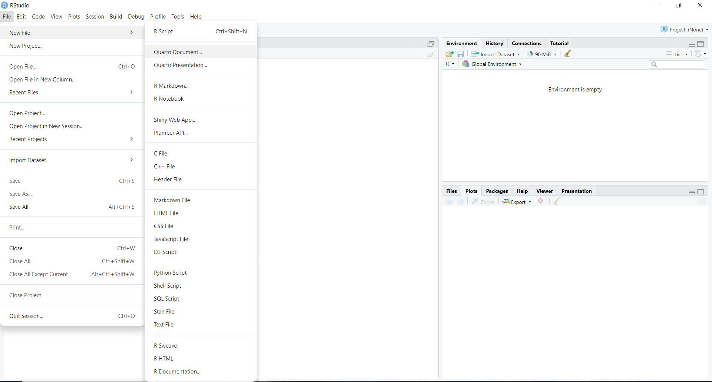
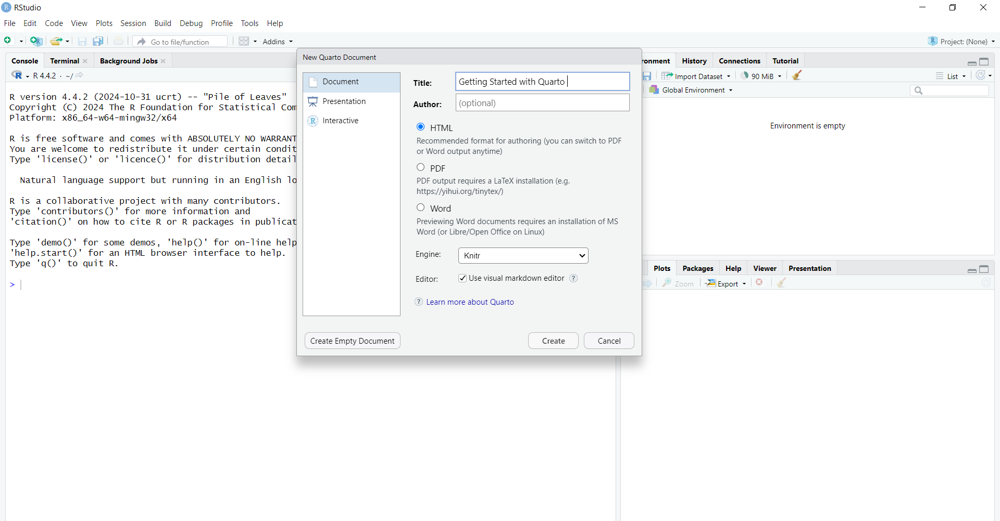
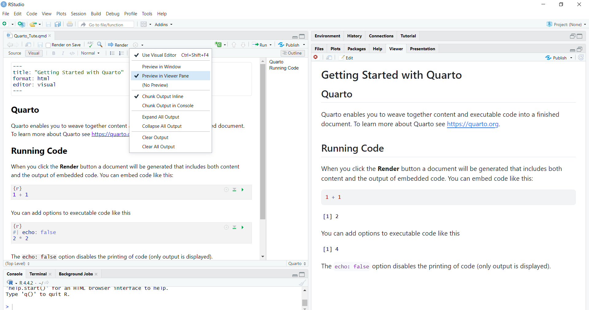
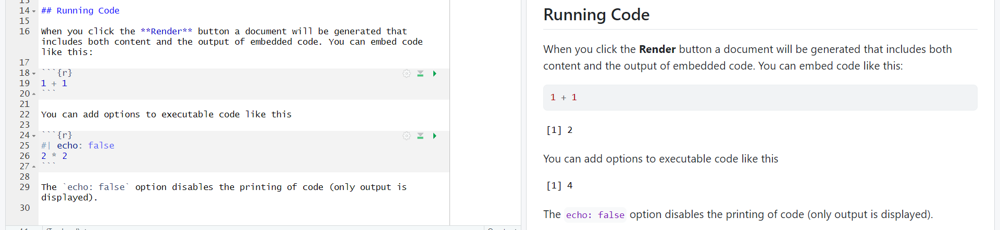

4 Reproducible Reporting with Quarto
As an economist, you work with complex data and statistics to give businesses useful financial advice. Clear and effective data communication is essential for this role.
So far, we have learned how to perform our analysis by writing commands in a script file. The advantage of this approach is that you can save all your previous code, avoiding the need to retype it from scratch each time. However, one major drawback is that the generated outputs (such as tables and graphs) are not saved automatically—you must manually save each one.
Even if you make an effort to save the output, manually copying and pasting results can sometimes lead to human errors. Additionally, you may only notice errors in the original dataset after generating the outputs. When this happens, you have to rerun the code step by step, regenerate all the outputs, and manually replace the previous results based on incorrect data. This process is time-consuming and increases the risk of mistakes.
This is where reproducible reporting or dynamic documents become useful. Dynamic documents allow you to store text, code, and output (e.g., tables, graphs) all in a single file. Unlike R script files, dynamic documents make it easy to save both the code and its results together, ensuring everything is available for future use.
4.1 Dynamic documents
Dynamic documents are important because they:
They let us add R code directly into the document, and the code runs automatically to include the results.
They update analyses and visuals automatically when data changes, saving time and reducing mistakes.
They help recreate results easily, making analyses more transparent and consistent.
They make it simple to share analysis and results with team members, improving collaboration and communication.
4.2 Dynamic Documents with Quarto
Both R Markdown and Quarto allow you to create dynamic documents. Quarto is the next generation of R Markdown, so in this book, I will focus on Quarto. For those already familiar with R Markdown, you’ll find the transition to Quarto very easy, as the syntax is very similar.
4.2.1 Installing Quarto
A stable release of Quarto is included with RStudio version 2022.07.1 and later. Upgrading to future versions of RStudio will also upgrade the bundled version of Quarto.
4.2.2 Why Quarto ?
Quarto supports multiple programming languages (R, Python, Julia, and more) within the same document, allowing for a more versatile workflow.
Quarto provides a wider range of output formats, including HTML, PDF, Word, and slides, all from a single document. This flexibility makes it easier to publish content in various formats without needing separate files.
Quarto is designed with modern development practices in mind, making it easier to integrate with version control systems like Git.
Quarto offers advanced features for customization, including the ability to create custom formats and templates, which can help in producing highly tailored outputs.
Quarto is actively developed with a focus on modern data science practices, which means it benefits from ongoing improvements and a growing community.
4.3 Getting Started with Quarto
Let’s get started with Quarto:
- First, go to
File -> New File -> Quarto Document...
- Assign a name for the document title. You can always change the title later.

Choose your preferred output format. In this example, I’ve selected HTML, which is the default setting. You can switch to PDF or Word output at any time using the same source file, with just minor changes to the output type.
This will open a Quarto document called “Untitled1*” with example content. First, save the document with an appropriate file name.
To get a feel for Quarto, let’s render the example document and check the output.
Use the Render button in the RStudio IDE to render the file and preview the output.
To view the output in the Viewer Pane, click the settings button next to the Render button on the right side, and select the option “Preview in Viewer Pane”.

You will see the rendered output with both the code and the results in a single document.
If you go to the directory where you saved the
.qmdfile (the Quarto source file), you will also find the generated HTML output with the same name in the same directory.
4.4 Anatomy of a Quarto document
Now that you know how to render a Quarto document, let’s get familiar with the anatomy of a Quarto document. The file contains three types of content: a YAML header, code chunks, and markdown text.
In addition to that, we can view the same .qmd document in two modes of the RStudio editor: visual (on the left) and source (on the right). Open the source window so that you can easily identify the syntax..
4.4.1 YAML header
In Quarto, YAML (which stands for YAML Ain’t Markup Language) is used for setting up metadata and configurations for your document.
It is placed at the top of the Quarto file within three dashes (—), and it allows you to specify document options such as the title, author, output format (HTML, PDF, Word), date, and more.
In YAML, the basic format is
key: value, where you assign a value to a key.
---
title: "Getting Started with Quarto"
subtitle: "Report 1"
author: "Priyanga Talagala"
date: "2025-01-31"
output: html_document
---4.4.2 Code Chunks
In Quarto, code chunks are sections of the document where you can write and run code. You can think of this part as a mini console window within the Quarto document.
A code chunk in Quarto is enclosed between three backticks (```) to separate it from the rest of the text.
The code inside these chunks is executed when you render the document, and the output (such as tables, plots, or results) is displayed directly in the final document.
These chunks can contain code written in different programming languages, such as R, Python, or Julia. In the following example, {r} indicates that we are going to run R code inside this code chunk.
If you want to run Python code, you just need to replace {r} with {python} in the code chunk.

4.4.3 Markdown text
Markdown text includes formatted text, such as section headers, paragraphs, embedded images, and more. Quarto uses Markdown syntax for writing text, which is clear when you switch to the Source tab.
To define section headings, you use the # symbol. The number of # symbols determines the level of the heading: one # for an H1 heading, two ## for an H2 heading, three ### for an H3 heading, and so on.
In R Markdown syntax, you can format text as follows:
To make text bold, use
**bold**.To make text italic, use
*italic*.
This is **bold** text and this is *italic* text.
This is bold text and this is italic text.